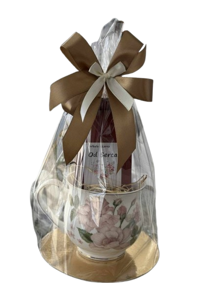

[ANIMACJA — torebka herbaty / kawy]
O nas
[ZDJĘCIE WŁAŚCICIELKI]
Filiżankę otworzyłam z prostego powodu: chciałam mieć u nas w okolicy miejsce, w którym kupi się herbatę wybraną z sercem, a nie zdjętą z półki w hipermarkecie.
Każdą kawę i każdą herbatę przywożę z niewielkich palarni i plantacji. Sama je parzę, próbuję i dopiero wtedy trafiają do sklepu. Jeśli czegoś nie postawiłabym na własnym stole, nie znajdziecie tego u mnie.
Najbardziej lubię, kiedy ktoś wchodzi bez pomysłu, a wychodzi z czymś, o czym potem opowiada znajomym. Wpadnijcie, doradzę, opowiem i pozwolę powąchać wszystko, co mam na półkach.
Właścicielka Filiżanki
Bestsellery
Cały asortyment
Znajdź nas
Adres
Psary Stare 39A
97-320 Wolbórz
Telefon
515 313 127Godziny otwarcia
- Poniedziałek–Piątek
- 13:00–17:00
- Sobota–Niedziela
- Zamknięte
Social media